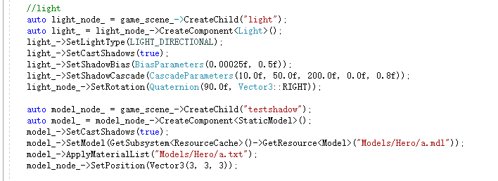
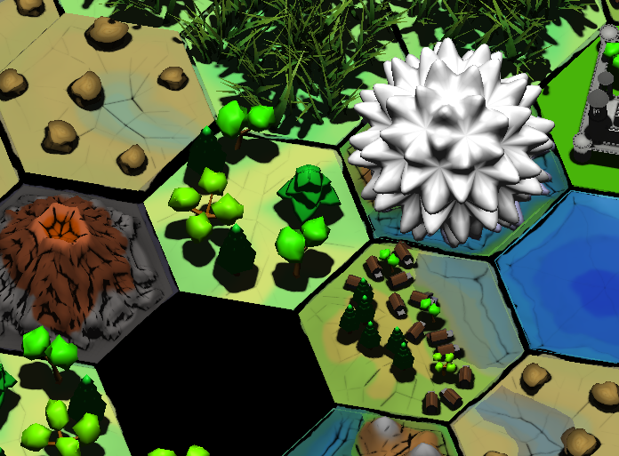
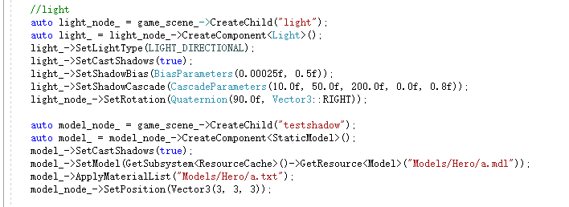
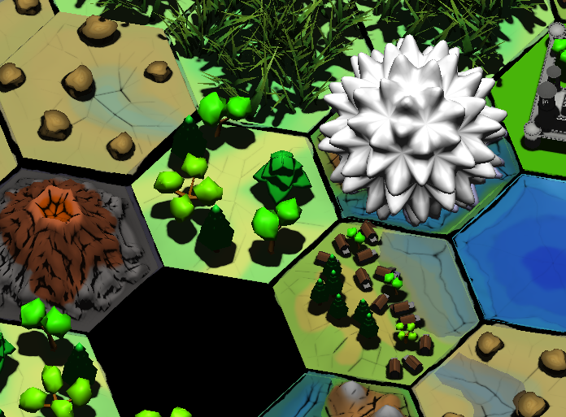
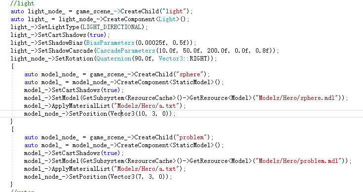
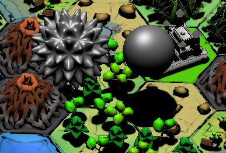

chenjie199234
the tree has shadow.but the white ball didnt.
why?


the tree has shadow.but the white ball didnt.
why?



what material technique does it have? What if you assign some other object’s material to it?
it is the model caused this problem.
im using the defaultgrey.xml in the coredata/materials.
i use two different model.one is a sphere from blender.one is the model in the picture.
the sphere has shadow.the model in the picture doesnt.
here is the picture


that’s weird. Don’t know why it could be so. Try renaming problem.mdl into sphere.mdl, try applying material instead of materialList, check if there are multiple meshes in this model. upload a file.